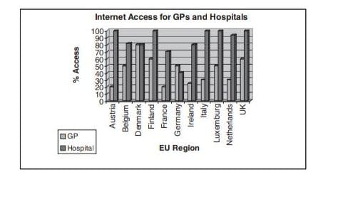

Figure 2. Internet access for general practitioners and hospitals at a European level
information, with thousands of disease support groups, clinical advice forums and
disease-specific information resources. According to Provost, Perri, Baujard, and Noyer
(2003), patients use the Internet to search for health and drug information, disease
description, medical literature, online medical consultation, and to seek second opinions
on a medical diagnosis. Health professionals on the other hand use the Internet to search
for information on drugs, medical literature and recommend Web sites and support
groups to patients (Provost et al., 2003). The Internet, can in addition, be seen as a
valuable aid to computer assisted learning. A multitude of resources exist, (for example,
Physicians Online) which can provide access to a wide range of valuable multimedia
learning resources.
Electronic Care Communications: Electronic care communications, or healthcare ad-
ministration systems, provide the potential for the use of secure local and wide area
networks to speed up: scheduling appointments; referrals between healthcare profes-
sionals; communication of outcomes and discharge letters. The Internet can also be
useful to spread policies (Policies, Medical Practice Management) and can be used as
an assistance tool in the entry point in hospitals. For example, in Chonnam National
University Hospital of Korea (Korea Chonnam Hospital), an institution with about 4,000
patient visits per day, the Internet is used to manage all patient information.
e-Prescribing: e-Prescribing has been defined as the use of an automated data entry
system to generate a prescription (Krohn, 2003), however it is appreciated that in the
modern ICT based healthcare arena e-Prescribing refers to the use of both computing and
telecommunications technology to capture, store, print and often transmit prescription
data. Contemporary e-Prescription systems provide connectivity between general prac-
titioners, pharmacists and healthcare agencies enabling secure and accurate transmis-
sion of new and repeat prescriptions. At present, e-prescribing is being addressed at
national levels with many systems already operational (Middleton, 2000) and others
being piloted prior to uptake (Mundy & Chadwick, 2003)
Delivery and Support of Direct Care: The Internet has been comprehensively reported
to support many home-based care models (Beolchi, 2003) supporting aspects such as
medication management (Nugent, Finlay, & Black, 2001), vital signs assessment and
cardiac monitoring to name but a few. Internet-based home care can be an efficient cost-
effective means to reach distant groups of people. In Japan, where there are more than
200 islands with 80 of them having less than 300 people and 60 having no healthcare
clinics, Internet-based healthcare plays an important role in preventive medicine and
early diagnosis (Isechi, Oda, Shinkura, Akiba, Fujikawa, & Yamazaki, 2004).
Decision Support and the Internet
Many “intelligent” tools have made their way into medical applications. Indeed, medicine
has always been one of the most important and sought-after application areas of decision
support systems and artificial intelligence. Such systems have been helping healthcare
professionals for more than four decades with the first instance of usage of computers
in medicine considered to be the analysis of electrocardiogram data in the late 1950s
(Stallman & Pipberger, 1961). Computerized approaches to decision support can provide
intermediate patient assessments. In the most general case they are useful for the
analysis of complex and large amounts of data quickly. This results in repeatable
processing of clinical and patient data, and offers benefits of consistency and lower
levels of observer variability (Willems, Abreu-Lima, Arnaud, Van Bemmel, et al., 1988).
Successful approaches to medical decision support have varied from the application of
decision trees and expert systems (van Bemmel & Musen, 1997) to Neural Networks and
Genetic Programming.
The establishment of Internet-based healthcare systems has produced a realm of
opportunities for the uptake and application of medical decision support systems. With
Internet-based healthcare intermediate automated decision support can now be facili-
tated. A problem associated with such an approach is the identification of the most
relevant information upon which to perform the analysis and the format of the resulting
output to be presented to the clinician/patient. The amount of information generated is
vast, in addition to its complexity and multi-faceted structure.
The element of time, associated with clinical information can be identified as an important
aspect in the delivery and automation of decision support that can be facilitated by
Internet-based healthcare delivery. It has recently been reported that the element of time
has not had its full potential exploited in terms of the benefits it can offer in medical
decision support systems (Augusto, 2003a). Although Internet-based systems and
medical decision support systems are slowly merging, consideration must also be given
to the tools required to analyze time related information and give consideration as to how
they can be incorporated into Internet-based healthcare delivery.
The Benefit of Temporal Reasoning in
Remote Decision Support for Medicine
We address here some general issues related to Temporal Reasoning (TR) which will be
associated with the application domain in the following sections. Firstly, we wish to
highlight the importance of TR in daily life. Although usually unconsciously, we need
to make considerations on a daily basis regarding the preferred order that some of our
activities have to be performed in, or for how long some of these activities will last.
Frequently deadlines have to be met, such as at work we are constantly undertaking
activities which have prescribed time limits, in our personal lives we engage in activities
that are constrained by time; to collect children from school or to reach the supermarket
before it closes. These activities sustain our perception of time ubiquity and provide a
clear practical motivation behind the research in TR.
The importance of addressing the way in which humans deal with time-related notions
was identified in the 1970s as an important goal to be addressed by the Artificial
Intelligence (AI) community as a step towards providing intelligent behavior from
computing systems. Now, TR is a well-established area of research within AI. Research
in the area has been steadily increasing over the past two decades and as a result much
understanding about the related problems has been gained and many techniques and
associated tools are now available.
There are a plethora of concepts to be considered when designing dynamic systems. An
elementary issue relates to the temporal references to be used (hours, minutes, calendar
Figure 3. Qualitative temporal relationships between durative and non-durative
temporal references (a) interval-interval case (b) point-point case (c) point-interval
case
dates, etc.). Also, should the primitive occurrence of them be instantaneous (e.g., turning
a light on or off) or durative (e.g., keeping a light on for a period of time), or should both
be used? Some of the more basic temporal frameworks are based either on time points,
on intervals or on a combination of both. Figure 3 (a) depicts at an intuitive level, the
possible meaningful situations two intervals can be in. Part (b) shows the two meaningful
relative positions for two points, while part (c) shows the possible situations between
a point and an interval.
Explicit details of how the aforementioned can be integrated in a TR system can be found
in Allen (1984) and Meiri (1991). Temporal references provide a way to directly represent
situations involving different types of sequential or concurrent time-related concepts
like states holding for a given period or events that can provoke a transition in the system
from one state to the next one. Specific research has been focused on repetitive patterns
that may be used to reason about processes (Cukierman & Delgrande, 2000).
The durative time references included in Figure 3 are called intervals and rely on precise
knowledge about their duration. However, it is usually the case that the knowledge
available is not as precise as desired, for example, it may be known when an event started
but not when it finished or vice versa; these are called semi-intervals (see Freksa, 1992).
If for example the end of an interval is not known then it may be important to infer when,
possibly within some boundaries, the point at which the semi-interval can be supposed
to persist to (see Sadri, 1987; Augusto 2003b).
It is impossible to give here a full coverage of all the subtleties involved in TR. We have
introduced some basic concepts and invite the interested reader to review the following
to obtain a more complete picture of the subtleties, challenges and benefits involved in
using TR: Newton-Smith (1980); Shoham (1987); Sandewall (1994); Galton (1995) and
Augusto (2001).
Why Temporal Reasoning is Important in Medicine?
Reflecting the many possible instances of time-related information in medicine there has
been quite an intense research activity in the area during the last decade. See for example
some of the special issues focused on the topic: Keravnou (1991); Keravnou (1996);
Combi & Shahar (1997); Shahar & Combi (1999) and a more recent survey by Augusto
(2003a).
A long list of general activities has been identified as key initial steps in the process to
provide explicit temporal awareness for systems related to medicine (Shahar, 1999). Some
of these activities are:
a. Determining bounds for absolute occurrences, some information may be missing,
for example we know when some symptoms finished but not when they started.
Hence it is possible by using other information to infer, at least within some time
boundaries, the point in time at which the symptoms started.
b. Persistence derivation, if we know that some symptoms started to develop, how
long can we assume that they will last?
c. Inconsistency detection and clipping of uncertainty, in real life we know that there
are conditions which are mutually exclusive, for example, it is not possible to have
“high blood pressure” and “normal” blood pressure at the same time. However, we
may have information indicating a patient having high blood pressure from days
one to three and normal blood pressure from days five to eight; but we do not know
what the blood pressure was during day four. It may be equally plausible that the
persistence of the period of high blood pressure extends into day four as well as
the persistence into the past that the period of normal blood pressure may have
started on day four, leading to an inconsistency about what the system can actually
infer about day four. Gathering more information or applying extra inference
mechanisms can lead to the elimination of the ambiguity.
d. Deriving new occurrences from other occurrences, sometimes knowledge can be
inferred instead of gathered directly from the patient’s interview or medical records.
For example, if we are informed a patient has been taking specific medication and
it is known that this particular medication has known side effects.
e. Deriving temporal relations between occurrences, sometimes information about
which events have occurred is available but not in which order they occurred. It
is then important to have a means to disambiguate these qualitative relationships,
for example, if they were consecutive or concurrent, as they may play an important
role in the ensuing diagnosis. A headache followed by a stomachache may report
unrelated events but the headache may be a later consequence of the digestive
problem.
Shahar and Combi (1999) presented a range of sophisticated systems dealing with
various subtle topics addressing these integration issues. However, they also recog-
nized that these were only the first steps to tackle the formidable task of providing flexible
and rich integration between time representation and use in medicine. We share that view
and the purpose of this article is then to unravel further challenges which should be
addressed in order to obtain the next generation of intelligent assistants for medicine,
but in this case, focusing on distance-based decision support.
Why Temporal Reasoning is Important for
Internet-Based Medicine?
There are many areas of Internet-based technology that can benefit from TR related
technologies. As a way of illustration consider the scenarios previously discussed:
• Information Provision (training of personnel and students). It is important for
medical staff undergoing training to be capable of identifying and distinguishing
different clinical contexts based on their evolution in time
• Electronic Care Communications (hospital management). The ideal scenario for
this application would be that the system is used to allocate resources in an efficient
manner so that in transit or arriving patients can be directed to the correct places
for treatment and to ensure that all the resources required are available at the right
time
• E-prescribing (medication management). Internet-based prescribing can bring
efficiency in the timely location and preparation of medication in response to the
demands of a patient’s medication prescription as issued by their Doctor.
• Delivery and support of direct care (online medical diagnosis system). One of the
challenges in this scenario is the replacement of in situ examinations as a way to
collect evidence about symptoms. It is, however, also important to provide a means
to replace oral questions about the development of the symptoms through time
Intelligent support in Internet-based medical assistance is a challenging area that
demands a synergistic multidisciplinary effort involving areas of research like human-
computer interaction, security, databases, and medical informatics. It also demands
further multidisciplinary interaction between those whose knowledge of time-oriented
systems will find in the area of medicine a challenging but highly rewarding field of
application. Researchers and practitioners from medical informatics, TR in AI, temporal
databases, active databases, real-time databases, visualization of dynamic systems, and
real-time systems should have some knowledge and experience to share in this fertile area.
Although we believe all the areas listed above are important we will exemplify how this
context will affect key aspects of the traditional interaction between the professional and
patient during effective diagnosis. More specifically, we highlight the importance of
handling time-related concepts in Internet-based medicine and how its use may affect the
accuracy of diagnosis. We have found that existing systems do not handle the richness
of time-related concepts during the diagnosis stage and the variety of temporal refer-
ences required. For example, some symptoms are described as occurring on a particular
day, like “The symptoms started last Monday”. Some of them are identified precisely
once the duration is known, for example, “He had fever for three days”. Sometimes the
duration is not precisely identifiable and there is some degree of uncertainty the system
should be able to handle, for example, “Started yesterday evening and stopped at some
point during the night”. It is important to recognize repetitive processes, for example, “He
has headaches each time that he goes to music class” and frequencies of occurrence, for
example, “He has been taking this medicine three times each day”. Rich calendric
references should be handled, like seasons, in order to discover potential causes of
disease, for example allergies. Here we consider why, where and when these issues are
important in the context of Internet-based medical assistance.
Interaction Shifts with Internet-Based Diagnosis
The use of the Internet as an intermediate level between health centers and patients
brings a shift in the interaction and the usual tasks involved. The interaction is no longer
a physical meeting but instead there is a media that may restrict, sometimes significantly,
what each person involved in the communication perceives from each other
According to the degree of technology involved many traditional sources of information
may not be available. For example, the patient cannot be touched, visualization of the
patient’s body may be restricted, use of some technological advances like scanners,
radiographies, and ECGs may not be possible. Hence, making the most of what is available
will be vital.
Here the interaction between (i) a rich interface that allows extraction of information from
the patient in terms of the symptoms and (ii) suitable algorithms that can relate a, most
possibly, incomplete description of symptoms to a meaningful subset of possible
scenarios, will be crucial for the effectiveness of such systems. The interface becomes
a critical part of the system. In a routine visit to a clinician, natural language, body
language and other usual means of communications between humans are available. With
Internet-based consultations we can consider some substitutes like video and sound but
some of them may or may not be available. There may be occasions when these media
would not be usable, for example, due to privacy issues. Until image, video and sound
are widely available at the level of quality required to replace a face to face clinical
examination we focus on the more basic and less sophisticated ways of collecting
information via dynamically generated web based forms that can be used as the base for
interaction either in synchronous or asynchronous communication between patient and
health professional.
Other areas of computer science become relevant like Natural Language processing and
appropriate interfaces that are friendly enough for the patient while gathering as much
information for the clinicians as possible. At the diagnosis level different subtleties will
help to identify between a possible dangerous situation and a non-dangerous one or
between two diseases that may require very different treatment even when they share
similar symptoms, for example, flu and hepatitis. Being able to successfully detect the
described symptoms with pre-known patterns of disease will require mechanisms like: a)
disambiguating relative orders between events and descriptions, b) inferring possible
durations for them when they are not given explicitly, c) dealing with degrees of
uncertainty in terms of the temporal scope of a given set of events and conditions, d)
using the partial list obtained at any time during the interaction to assess which is the
most likely scenario which in turn will help to select which questions to ask next or which
information to gather in order to maximize efficiency during the diagnosis process.
There are quite a few hypotheses that must be taken into account to supply the system
with extra information that is available or gathered by other means. One basic point is that
patients should have a history, the normal approach for storing time-related information
being temporal databases (Tansel, Clifford, Gadia, Jajodia, Segev, & Snodgrass, 1993;
Etzioni, Jajodia, & Sripada , 1998). Also, the system should be time sensitive in the sense
that each subsequent visit should provide a different context. For example, if the purpose
of the later visit is to incorporate further information about a previous description of
symptoms, the system should react accordingly and should present information differ-
ently and/or different information. Once all the symptoms have been entered and those
that are relevant to the hypothetical syndrome are identified, the system may advise on
how to monitor for their evolution in time.
The rules for diagnosis should be “time-aware” and the interface with the patient should
allow some way to clearly indicate key time-based references, for example, the frequency,
duration and proximity of symptoms. The inference engine should instantiate internally
these temporal references with patterns and use the time of occurrence as a reference
during the reasoning. A specific device can be used for daily monitoring so as to reduce
errors, but more sophisticated users or applications will demand a more sophisticated
interaction and description of events and conditions. For example, if a patient is trying
to describe symptoms to ascertain if they have a medical condition, the temporal distance
between their occurrence and the relative order of their occurrence can make a difference
in the final diagnosis. In an asynchronous context, patients may be monitored and the
system, based on the trends of the input data in time, may decide to take a cautionary
step of contacting a health professional
To detail further of how TR in Internet-based healthcare may be employed, the following
sections provide an overview of three potential candidates
Here we consider a living environment for a person who supports and promotes
independent living by including a number of technological solutions embedded into their
home environment. The information gathered from such technology can be monitored
remotely via an Internet-based control center and used to provide a means of interaction
in the home environment between the person and their surrounding environment. (A
more technical description of this scenario can be found in Augusto and Nugent, 2004.)
In the scenario shown in Figure 4, a person’s movements can be monitored via motion
sensors in each room. The key issue, in terms of analysis of the information generated
Figure 4. Layout of apartment indicating embedded technology to support independent
living
by the smart house and in determining if an abnormal situation has arisen, is to primarily
ascertain the current location of the person. Following this, the sequence of their events
can be monitored along with their interaction with domestic appliances. The house, as
shown, is equipped with emergency switches, smoke and temperature sensor/alarms,
medical vital signs devices, sensors to detect movement out of bed and sensors to detect
if taps have been turned on or off. A middleware software structure provides the
necessary interoperability solution for the devices to ensure different data transmission
formats and standards can communicate between the house and the control center.
The diversity of the types of information generated by the sensors provides a number
of dimensions related to the person’s activities; (i) their whereabouts (ii) their interactio
with appliances and (iii) the duration of these events. The key element to take into
consideration is that as the person moves around the house and interacts with the
domestic appliances, analysis of this information and how the system should react must
take into consideration the ordering of these events and the time duration between them.
Hence TR based rules may be modelled and used to discriminate between normal
conditions and potentially hazardous situations when an alarm condition should be
raised. Consideration of the types of support required from a person can lead to support
in four different ways:
• Prevention of dangerous situations: The information gathered from the person’s
environment can be assessed and also take into consideration their previous
actions. The purpose is to provide an alarm when a person’s actions may lead to
a potentially hazardous situation.
• Comfort: This addresses the issues of the surrounding environment and changes
these by taking into consideration the person’s whereabouts and their actions, for
example, turning lights on or off as they move from different rooms, or adjusting
the temperature when it becomes too hot or too cold.
• Security: Rules may be generated to provide an element of security. For example,
rules can be generated to act accordingly if an intruder or unexpected visitor enters
into the house.
• Health: Information can be accessed from self-operated medical devices. It is often
necessary to monitor vital signs over a period of time e.g. monitoring of blood sugar
level. For example, if this has an abnormally low or high value for more than three
successive recordings then medical staff should be contacted.
The analysis of the information generated can be based on an Active Database (ADB)
framework, an approach commonly used in TR. ABD are strongly based on the concept
of ECA (Event-Condition-Action) rules. ECA rules have the following form:
The ON clause assesses in a given system the series of events that take place. For
example, it is possible to detect an event defined as “a person being in bed at a given
period of time during the day for a long period of time.” According to these events they
may be matched against certain criteria (IF clause of the ECA rule). For example, the
criteria may be that according to their profile it is not normal to be in bed during this period.
The final component of the ECA rule is the DO clause. When an instance of the events
defined in the ON clause occurs, and given that the condition has been matched
according to the IF clause this will lead to the system acting accordingly such as the DO
clause. For example, a form of action/intervention must be taken to assess why the person
is still in bed. The following ECA rule schema informally represents this scenario:
ON “person being in bed for a long period of time”
IF “not expected to be in bed during this period”
DO “contact relevant carer”
Another example may be representation of a condition where the system knows a person
is in their house, but when the doorbell has been activated by a visitor, the person in the
house has not responded. This may be represented by the following ECA rule schema:
ON “doorbell ringing and person not answering the call for a long time”
IF “person inside house and not known to have hearing problems”
DO “apply possible emergency plan”
Here we have just provided schema rules. Notice that there are specific time-related
concepts that are embedded in these rules, like the expression “a long period of time” in
the first rule and the need to detect the temporal sequence between the doorbell ringing
and the person not reacting to it. These concepts are domain dependant and should be
further specified in a specific language that can be adequately interpreted by a computer,
for example Prolog. To see one example of such a language, including temporal references
like those depicted in Figure 3, and a specific application of the scenario described in this
section to smart homes for elderly care, we invite the reader to make reference to Augusto
and Nugent (2004)
Through an ECA rule set specification it is possible to model the activities of the person
and based on different activities the system can interact and change their living
environment to promote independent living in a number of ways. The core element of
such an interactive system will be reliant on an ADB management system hosted by an
Internet-based server with capabilities to distinguish between normal situations and
abnormal situations where some form of human intervention is required to assist the
person.
Example 2: Use of TR in Medication Management
Medication compliance indicates the precision with which a patient follows a medical
prescription. This is a relatively new research domain that is currently receiving much
attention (Farmer, 1999; Wertheimer & Santella, 2003). Non-compliance has a negative
impact on both the individual patient and the healthcare system and wider economy. The
impact is clear: if a patient has been prescribed correctly following diagnosis, non-
compliance becomes an important barrier in optimizing treatment
To assist with the issue compliance aids have been devised, tested and employed.
Typically, compliance aids have been classified into three categories; pill holders
(Corlett, 1996), alarm-based aids (Szeto & Giles, 1997) and monitoring devices (Wertheimer
& Santella, 2003). The latter of these are the most elaborate and form part of an integrated
care model whereby the patient’s adherence to their medication regime can be monitored
remotely (e.g., via an Internet-based care model) and alarms issued in instances of non-
compliance as a means of reminder. These systems facilitate the collation of unlimited
information regarding the patient’s compliance and hence provide for the means of data
analysis. For example, for a given patient, analysis of their data may show that due to their
lifestyle they repeatedly miss their medication dosages on Friday afternoons and
Saturday nights. For a different patient, analysis may show that they have high levels
of non-compliance during periods at which they may be at work. The resultant informa-
tion can be used to readjust the medication regimen in instances of non-compliance. This
is a complex procedure and must take into consideration the patient’s ailment, their entire
medication regime and the impact that missing one medication may have on the remainder
of medications and the point in time when the medication must be taken, for example,
before meals.
Qualitative and quantitative TR (as previously outlined) may be employed in this
instance whereby a set of formal rules can be established and used to control the
underlying principles by which a patient’s medication regime must be altered to accom-
modate for instances of non-compliance. For example, a decision support system running
on the central Internet-based server monitoring patient’s compliance at home may have
the following (hypothetical) rule set:
Qualitative Rule Set to Manage Instances of Non-Compliance
+Warfarin must be taken each day at 5pm
+Brufen must be taken after meals
+Insulin must be taken when sugar levels drop below a predefined value
+Acepril must not be taken at the same time as potassium supplements
Example 3: Hospital Management of Bed Occupancy
The estimation of the length of stay of patients in hospitals is important for patient
treatment management, bed occupancy management and cost effectiveness measures.
Mathematical models have been produced as decision aids in this area (McClean, 1994)
and in addition many trauma scores can be used to give an indication of patient survival
probability (Boyd, Tolson, & Cope, 1987) and severity of trauma indices (Champion,
Copes, & Sacco, 1990). All of this information along with demographic details, treatment,
physical and mental scores can be taken into consideration and used as means upon
which to generate a time to event measure, that is, prediction of length of stay in hospital.
This is a complex and multi-factorial problem, but nevertheless one worthy of further
attention. Qualitative and quantitative TR techniques may be used as the basis to model
the time to event measures. These techniques can easily be integrated into a hospital
based administrative system operating on an intranet/Internet basis which collates
information from all in-patients and wards within a hospital environment, in addition to
having access to centralized patient information. It can thus accommodate for the
complex temporal nature of the problem through formalized approaches, for example
Quantitative TR Rule Set to Manage Bed Occupancy
+Vacant beds should be increased by 10% during vacation
periods, predicted flu epidemics etc. (months 5,6,7 and 11, 12)
+Movement of patients between beds/wards should only occur
between 12.00 and 13.00 or 17.00 and 18.00
+A patient cannot remain within a bed for more than 24 hours
following indications that discharge has been approved
It is clear that the Internet will have a long-term role within healthcare applications. At
present its application and ability to improve upon current and existing healthcare
practices has shown its promise and already we are slowly witnessing its uptake. Many
of the drivers that will inevitably lead to success will come from governmental perspec-
tives. For example, in the United Kingdom the government has put at the forefront of its
healthcare organization agenda development and increased usage of Intranet and
Internet services (Tyrrell, 1999). Provision of access to clinical information via Internet-
based services allows not only access via common desktop PCs, but also through the
usage of mobile phones with Web browsers and personal digital assistants. Hence users
will no longer be geographically constrained and will be able to access information whilst
undertaking house calls or on a hospital ward. This concept is further extended through
the new and innovative research areas of Ambient Intelligence, Context-Aware Comput-
ing, User Profiling and Pervasive and Ubiquitous Computing (ERCIM News, 2001) where
networks and interoperable communication infrastructures, along with intelligent pro-
cessing of information gathered have evolved as the next generation of services which
could further support this area
In general, the role of ICT within healthcare will change the way in which patients interact
with healthcare professionals and also the way in which healthcare professionals interact
with each other. It is not unreasonable to consider that patients may be able to access
information via the Internet in the future and self-diagnose based on their symptoms
(Tyrrell, 1999). In addition, the recent success of sensor and textile technologies,
wearable vital sign monitors and home based medical devices for self assessment make
self-recording a possibility and provide tangible clinical information to be used in self-
diagnosis. For this to become reality, regional and national networks of high standing
will have to be established to ensure the integrity of the information and processes to
which the patient may have access. From the healthcare professional’s point of view, the
Internet offers the future role of high quality information provision. This will provide
enhanced access to new and evolving techniques, medical conditions and online
learning capabilities. All of which will greater inform the healthcare professionals
resulting in an overall improved level in healthcare quality
From a more general perspective, the Internet has the ability to connect, on a global scale
patients and healthcare professionals during consultation processes. For example, a
patient may request a diagnosis directly from any private based clinic in the world, or on
a “pay-per-use” basis, exploit the e-commerce nature of the Internet and decrease waiting
times for private examinations or treatments. Although these scenarios are not unrealistic
to consider, it must be appreciated that the term “the Internet” as a means to provide them
all is a large scale underestimation of the complexity of the underlying processes. A
multitude of components such as communication bandwidth, mobile communication
infrastructures, security, interoperability, transmission protocols, information exchange
standards, and decision support modules will all have a role to play. Considering the
latter, which has been the main thrust of the current work, establishes the need to further
improve upon existing approaches
It is envisaged that efforts will continue to provide solutions, from a TR perspective,
which can accommodate for the temporal nature of healthcare based information. Recent
studies (Shahar, 1999; Augusto, 2003a) have identified several key areas of TR to be
explored to provide more accurate and useful automated assistance in healthcare. Here
we have covered general aspects while more specific and technical coverage is given in
Augusto & Nugent (2004). Some of the tools and the information required for the medical
practice is shared between the traditional scenario and the Internet-based approach to
diagnosis as discussed above. However, this article attempts to illustrate that while TR
remains an important concept to be considered in Internet-based healthcare, the infra-
structure where it is applied and the interaction with this technology is substantially
different and will pose further unresolved challenges.
It is evident that the way healthcare will be delivered in the future will involve the
utilization of ICT solutions, especially the Internet, to ensure a cost-effective means of
high quality of service. Coupled with this will be embedded automated medical decision
support systems offering the ability to analyze and interpret the plethora of clinical
information that can be acquired through such infrastructures and their data repositories.
This will inevitability result in both patients and healthcare professionals being pre-
sented more often with ICT healthcare solutions resulting in a change in the way they
interact.
The role of TR has been established and proven from a computer science perspective and
has attained applied success in many domains, including the assistance in medical
diagnosis and treatment. The last decade has witnessed a fruitful interaction between the
areas of TR and medicine and significant advances were made in time-related diagnosis
and therapy support. However, these advances were made under a different knowledge
management paradigm and although we think they may provide a good starting point they
cannot be directly applied to Internet-based healthcare systems.
Given that there is a large “time” element associated with clinical information and the
opportunity to embed TR into the next generation of Internet-based healthcare, we
identify this as a potential prolific area for future developments and an opportunity to
identify “how” and “where” it can be applied. Specifically, it is our view that in the short
term TR will be a valuable asset in the provision of automated support during Internet-
based patient to healthcare professional consultations
References
Allen, J. (1984). Towards a general theory of action and time. Artificial Intelligence, 23,
123-154.
Augusto, J.C. (2001). The logical approach to temporal reasoning. Artificial Intelligence
Review, 16(4), 301-333.
Augusto, J. C. (2003a). Temporal reasoning in decision support for medicine. Artificial
Intelligence in Medicine, 33(1), 1-24.
Augusto , J.C. (2003b). A general framework for reasoning about change. New Genera-
tion Computing, 21(3), 209-247.
Augusto, J.C. & Nugent, C.D. (2004). The use of temporal reasoning and management
of complex events in smart homes. Technical report, School of Computing and
Mathematics, University of Ulster at Jordanstown, UK. Online http://
www.infj.ulst.ac.uk/~jcaug/TR-AugustoNugent2004a.pdf
Beolchi, L. (2003). Telemedicine glossary (5th edition). Working Document, Glossary of
concepts, technologies, standards and users. November. European Commission
Information Society Directorate-General.
Beun, J.G. (2003). Electronic healthcare record: A way to empower the patient. Interna-
tional Journal of Medical Informatics, 69, 191-196.
Boyd, C.R., Tolson, M.A. & Cope W.S. (1987). Evaluating trauma care. The TRISS
method. The Journal of Trauma, 27, 370-392.
Bushko, R.G. (2002). Future of health technology. Amsterdam: IOS Press.
Champion, H.R., Copes, W.S. & Sacco W.I. (1990). A new characterization of injury
severity. The Journal of Trauma, 30, 539-545.
Combi, C. & Shahar Y. (Eds.) (1997). Time-oriented systems in medicine. Computers in
Biology and Medicine, 27(5).
Corlett, A. J. (1996). Aids to compliance with medication. BMJ, 313, 926-929.
Cukierman, D. & Delgrande, J. (2000). A formalization of structured temporal objects and
repetition. Proceedings of the Seventh International Workshop on Temporal
Representation and Reasoning (pp. 13-20).
ERCIM News (2001). Ambient intelligence. ERCIM News, 4
Etzioni, O., Jajodia, S. & Sripada S. (Eds.) (1998). Temporal databases: Research and
practice. Springer-Verlag.
Farmer, K.C. (1999). Methods for measuring and monitoring medication regimen adher-
ence in clinical trials and clinical practice. Clinical Therapeutics, 21(6), 1074-1090.
Freksa, C. (1992). Temporal reasoning based on semi-intervals. Artificial Intelligence,
54, 199-227.
Galton, A. (1995). Time and change. In D. Gabbay, C. Hogger & J. Robinson (Eds.),
Handbook of logic in artificial intelligence and logic programming (epistemic
and temporal reasoning) (Vol. 4, pp. 175-240). Clarendon Press.
Isechi, A., Oda, C., Shinkura, R., Akiba, S., Fujikawa, H. & Yamazaki, K. (2004). Experiment
of Internet-based tele-medicine in Amami Rural Islands. Proceedings of Workshop
on Internet to Support Social Welfare (SAINT2004), Tokyo, Japan, January. IEEE
Press.
Keravnou, E.T. (Ed.) (1991). Medical temporal reasoning. Special Issue from Artificial
Intelligence in Medicine, 3(6).
Keravnou, E.T. (Ed.) (1996). Temporal reasoning in medicine. Special Issue from Artifi-
cial Intelligence in Medicine, 8(3).
Korea Chonnam Hospital (n.d.). Online http://kr.bea.com/case_studies/chonnam
_hospital_eng.pdf
Krohn, R. (2003). Making e-Prescribing work: A fresh approach. Journal of Healthcare
Information Management, 17(2), 17-19.
Malaysian Telemedicine Blueprint (2001).
McClean, S.I. (1994). Modelling and simulation for health applications. In Modelling
hospital resource use (pp. 21-28). London: RSM Press.
Meiri, I. (1991). Combining qualitative and quantitative constraints in temporal reason-
ing. Proceedings of AAAI 1991 (pp. 260-267).
Middleton, H. (2000). Electronically transmitted prescriptions: A good idea. The Phar-
maceutical Journal, 265, 172-176.
Mundy, D.P. & Chadwick, D.W. (2003). Security issues in the electronic transmission of
prescriptions. Medical Informatics & The Internet in Medicine, 28(4), 253-277.
Newton-Smith, W. H. (1980). The structure of time. London: Routledge and Kegan Paul.
Nugent, C. D., Finlay, D. D. & Black, N. D. (2001). The design of a care model and
associated peripherals to assist with non-compliance of medication. Proceedings
of the Engineering in Medicine and Biology Society International Conference
(IEEE EMBS), Istanbul, Turkey.
Physicians Online (n.d.). Online http://www.po.com
Policies (n.d.). Online http://www.evidence-based-medicine.org/medical-practice-
management.htm
Provost, M., Perri, M., Baujard,V. & Noyer, C. (2003). Opinions and e-Health behaviors
of patients and health professionals in the USA and Europe. Proceedings of
Medical Informatics Europe Annual Meeting (MIE 2003). St. Malo. IOS Press